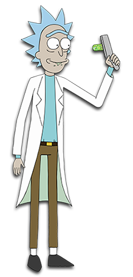

Rick and Morty é uma série de animação adulta norte-americana de comédia e ficção científica
criada por Justin Roiland e Dan Harmon para o bloco de programação noturno Adult Swim,
exibido no canal Cartoon Network.
A série estreou em 2 de dezembro de 2013
e acompanha as perigosas aventuras do cientista alcoólatra Rick e seu neto Morty,
que divide seu tempo entre a vida familiar e viagens interdimensionais.
Curiosidades da Série

- O seriado foi criado, vendido e roteirizado em apenas um dia
- A inspiração para Mr. Meeseeks veio de um gato
- Havia a ideia de inserir um segredo que só seria revelado no final,
mas foi abandonada porque um fã o descobriu - Todos os arrotos de Rick são reais
- Pickle Rick é uma homenagem a um episódio de Breaking Bad
- Os roteiristas não pesquisam a parte científica da série
- “Wubba lubba dub dub” foi uma tentativa falha de imitar os Três Patetas